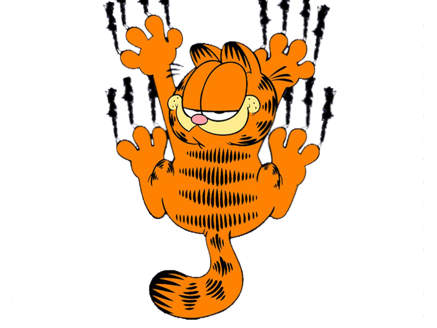

Mis Proyectos
Comics
- Descripción
- Los cómics de Garfield fueron creados por Jim Davis y comenzaron a
publicarse en 1978. Las tiras cuentan la vida de un gato naranja, perezoso
y sarcástico que odia los lunes y ama la lasaña. A través de situaciones
cotidianas con Jon y Odie, el humor se basa en el sarcasmo, la ironía y la
crítica ligera de la vida diaria.
- Tecnologías
- Los primeros cómics se realizaban mediante el dibujo tradicional a mano, utilizando
tinta y papel para su publicación en periódicos impresos. Con el paso del tiempo, la producción
evolucionó hacia el uso de herramientas digitales de ilustración y edición gráfica, permitiendo
su distribución en formatos digitales y plataformas online.
- Enlace o boton
Serie
- Descripción
- La serie animada más conocida es The Garfield Show, una adaptación televisiva que
presenta aventuras más dinámicas del personaje y sus amigos. En la serie, Garfield vive
historias más desarrolladas que en las tiras cómicas, manteniendo su humor característico
y su personalidad divertida.
- Tecnologías
- La serie fue producida mediante animación digital en 3D, utilizando software avanzado de modelado
y animación por ordenador. A diferencia de las primeras animaciones tradicionales en 2D, esta versión
emplea técnicas modernas de renderizado, efectos digitales y producción audiovisual digital.
- Enlace o boton
Pelicula
- Descripción
- La pelicula más conocida es Garfield: The Movie, estrenada en 2004. En esta adaptación
cinematográfica, Garfield interactúa en un entorno real junto a actores humanos, combinando comedia
y aventura. La historia gira en torno a los celos de Garfield cuando Jon adopta a Odie.
- Tecnologías
- La película utilizó tecnología de animación por computadora para crear a Garfield en formato
digital, integrándolo con escenas de acción real. Se emplearon técnicas de efectos visuales, captura
de movimiento y edición digital para lograr una interacción realista entre el personaje animado y los
actores.
- Enlace o boton
Volver al Inicio